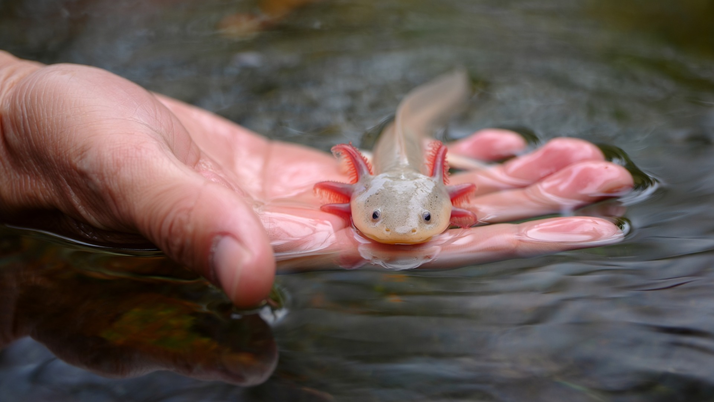

AJOLOTE
Hábitat
Lagos de agua dulce en México.

Características:
Descripción:
El ajolote es un anfibio originario de México que se caracteriza por conservar sus rasgos juveniles durante toda su vida. Es famoso por su increíble capacidad de regenerar extremidades, órganos e incluso partes de su cerebro. Vive en agua dulce y es una especie única en el mundo, actualmente en peligro de extinción.